Clase 2: Desviaciones del Gas Ideal y Ecuación de Van der Waals
Dónde falla el gas ideal y cómo repararlo: el factor de compresibilidad $Z$ como medida de la no idealidad, y la ecuación de Van der Waals construida a partir de dos correcciones físicas — tamaño molecular y atracción.
Temas que cubre
- Cierre de la ley barométrica: integración de $dP = -(Mg/RT)P\,dz$
- Factor de compresibilidad $Z$: definición empírica de la desviación respecto del gas ideal
- Lectura de las curvas $Z$ vs. $P$ a $0\,^\circ$C: qué gases caen bajo $Z=1$ y por qué
- Primera corrección: volumen finito de las moléculas, $\bar V = b + RT/P$
- Por qué esa corrección explica al $\mathrm{H_2}$ pero no al $\mathrm{N_2}$ ni al $\mathrm{CH_4}$
- Segunda corrección: fuerzas atractivas intermoleculares, término $-a/\bar V^2$
- Ecuación de Van der Waals y sus formas equivalentes (molar y con $n$ moles)
- Significado físico y unidades de las constantes $a$ y $b$; tablas
Conceptos clave
Factor de compresibilidad $Z$
$Z = \bar V_{\text{real}}/\bar V_{\text{ideal}} = P\bar V/RT$. Es un factor empírico, no un modelo: mide cuánto se aparta el gas del comportamiento ideal. Para el gas ideal $Z = 1$ siempre; para gases reales $Z = Z(T,P)$.
La constante $b$ — volumen excluido
Las moléculas ocupan espacio: cuando $P \to \infty$ el volumen no tiende a cero sino a $b$, que es aproximadamente el volumen molar del líquido. Este efecto aumenta $\bar V$ respecto del ideal y empuja $Z$ por encima de 1.
La constante $a$ — atracción
Las moléculas cerca de la pared son jaladas hacia adentro por sus vecinas, así que golpean con menos fuerza: la presión medida es menor que la ideal. La corrección va como $1/\bar V^2$ porque depende del producto de dos densidades (la que atrae y la atraída).
Alcance de las fuerzas
Las fuerzas de Van der Waals son de muy corto alcance (~nm). En el interior del fluido se cancelan por simetría; sólo importan en la capa cercana a las paredes, que es donde se mide la presión.
Dos efectos en competencia
$b$ tiende a subir $Z$, $a$ tiende a bajarlo. Cuál gana depende de $T$ y $P$ — de ahí que $\mathrm{H_2}$ tenga pendiente inicial positiva y el $\mathrm{N_2}$ negativa. La clase 3 formaliza esta competencia.
Ecuación de estado empírica
Van der Waals no se deriva desde primeros principios: es el gas ideal con dos parches físicamente motivados. $a$ y $b$ se ajustan a datos experimentales y están tabulados para cada sustancia.
Fórmulas fundamentales


Qué hay que entender
- $Z$ no explica nada: sólo cuantifica la desviación. Van der Waals sí explica, atribuyéndola a dos causas físicas concretas.
- Los dos parches tiran en direcciones opuestas. Si en un problema $Z < 1$, domina la atracción ($a$); si $Z > 1$, domina el tamaño ($b$).
- $b \approx$ volumen molar del líquido. Ese es el argumento que motivó la corrección: al licuar, el volumen deja de cambiar mucho.
- El término $a/\bar V^2$ se resta a la presión porque las atracciones frenan a las moléculas justo antes del impacto contra la pared.
- Cuidado con la forma que se usa: $(P + a/\bar V^2)(\bar V - b) = RT$ usa volumen molar; $(P + n^2a/V^2)(V - nb) = nRT$ usa volumen total.
- Van der Waals es sólo una de muchas ecuaciones de estado (virial, Berthelot, Redlich-Kwong). Se estudia porque es la más simple que captura la física correcta.